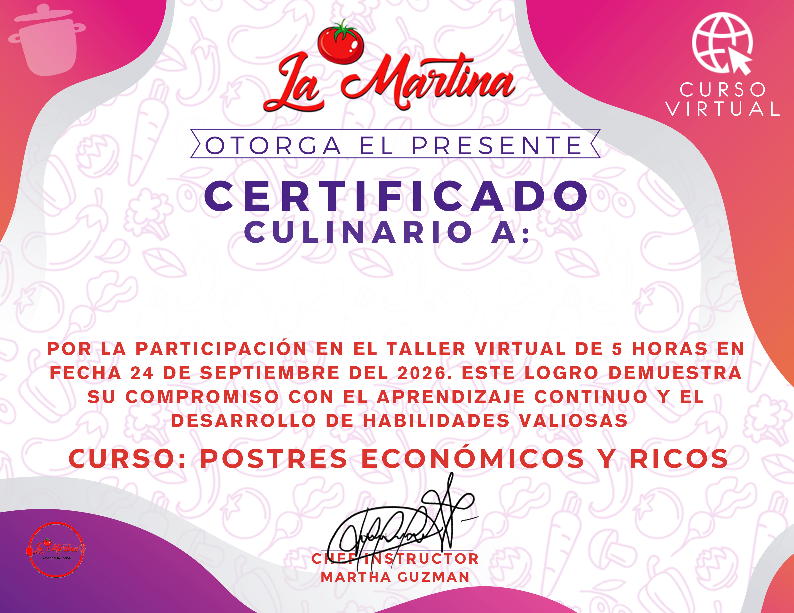

Gracias por acompañarnos a celebrar 9 años compartiendo la pasión culinaria junto a la Chef Martha Guzmán. Aprende recetas exquisitas, de bajo costo y alto rendimiento ideales para tu hogar o emprendimiento.
Descarga los documentos oficiales para seguir el taller paso a paso, planificar tus tiempos y conservar las fórmulas culinarias.
Estructura detallada del taller virtual: Ingredientes, Utensilios, Preparaciones y Recomendaciones previas al curso.
Guía completa con las recetas del aniversario: ingredientes exactos, procedimientos minuciosos, trucos de repostería para abaratar costos sin perder sabor y pautas de presentación.
Obtén tu certificado avalado por La Martina y la Chef Instructor Martha Guzmán. Escribe tu nombre para emitir tu certificado con Folio único de registro.

Escribe tu nombre completo. La vista previa se actualizará en tiempo real con la caligrafía oficial.
Este código único de autenticación quedará registrado en tu certificado oficial.
Se guardará en este dispositivo para que no lo pierdas.
El taller se transmitió en vivo a través de nuestro Grupo Privado de Facebook. Si aún no formas parte, únete ahora mismo para no perderte ningún minuto de la clase que quedó grabada para todos.
Grupo Privado Oficial
Explora nuestro catálogo virtual completo con cursos de repostería, panadería tradicional, cocina internacional y repostería saludable.
Contamos con más de 9 años de experiencia capacitando a miles de amantes de la cocina y emprendedores gastronómicos con recetas 100% garantizadas.
Consulta temarios, videos demostrativos y accede a promociones exclusivas en todos los cursos.
Ver Cursos Disponibles